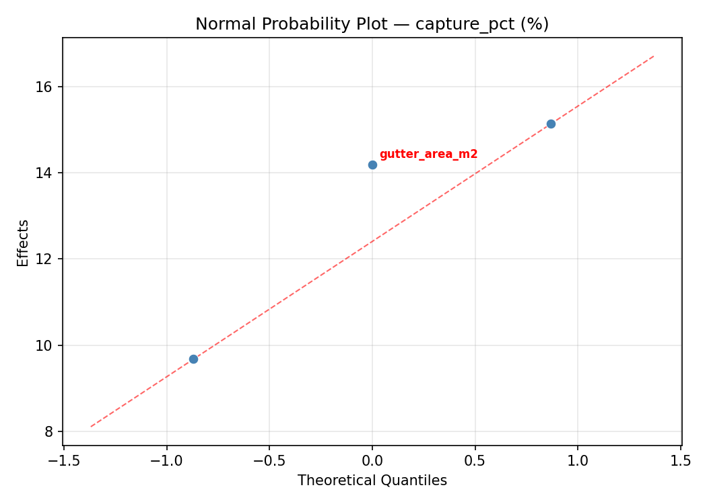
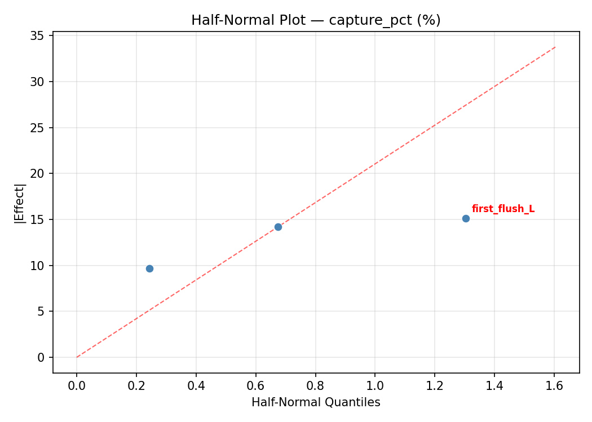
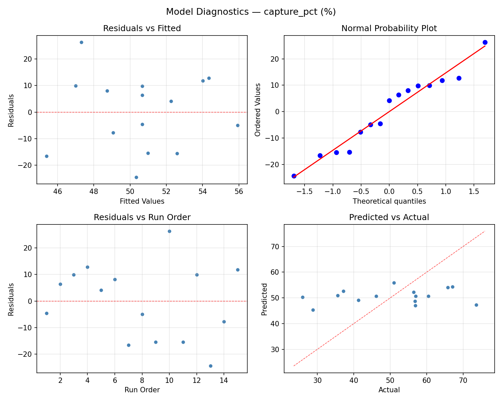
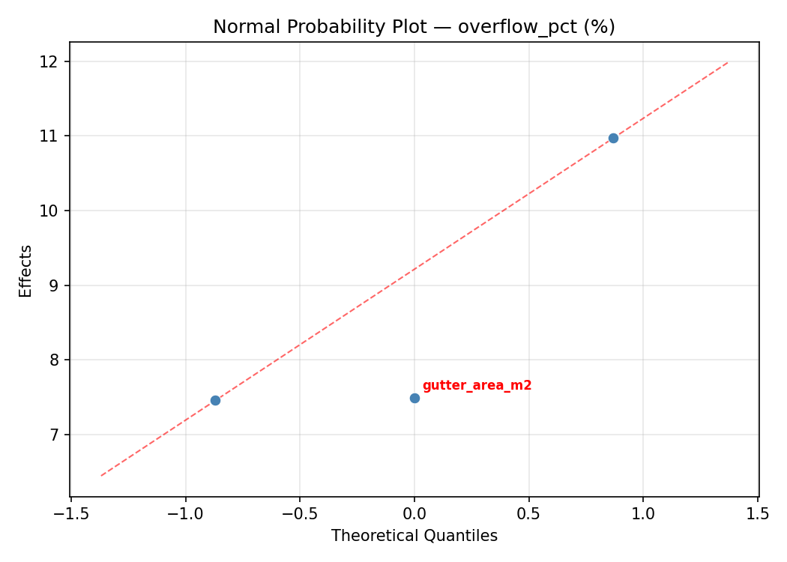
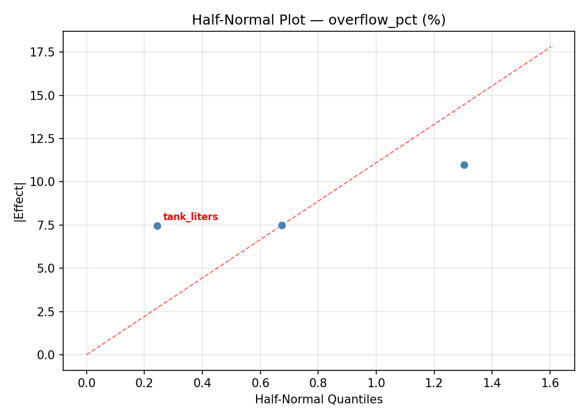
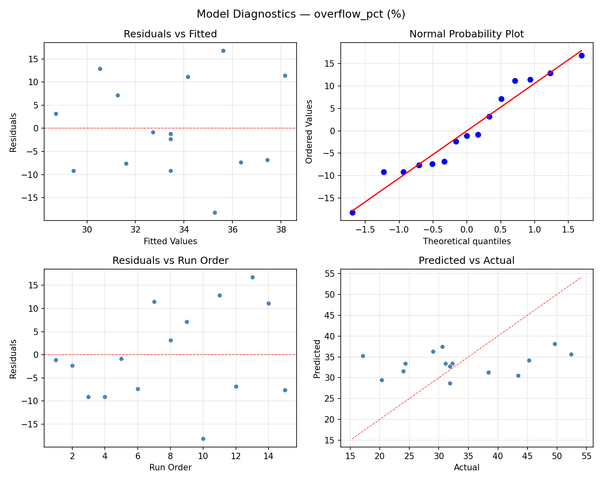

Summary
This experiment investigates rainwater harvesting system. Box-Behnken design to maximize water captured and minimize overflow by tuning tank size, gutter area, and first-flush diverter volume.
The design varies 3 factors: tank liters (L), ranging from 500 to 5000, gutter area m2 (m2), ranging from 50 to 200, and first flush L (L), ranging from 10 to 80. The goal is to optimize 2 responses: capture pct (%) (maximize) and overflow pct (%) (minimize). Fixed conditions held constant across all runs include annual rainfall mm = 900, usage L day = 50.
A Box-Behnken design was chosen because it efficiently fits quadratic models with 3 continuous factors while avoiding extreme corner combinations — requiring only 15 runs instead of the 8 needed for a full factorial at two levels.
Quadratic response surface models were fitted to capture potential curvature and factor interactions. The RSM contour plots below visualize how pairs of factors jointly affect each response.
Key Findings
For capture pct, the most influential factors were gutter area m2 (44.5%), first flush L (34.8%), tank liters (20.7%). The best observed value was 73.6 (at tank liters = 500, gutter area m2 = 50, first flush L = 45).
For overflow pct, the most influential factors were gutter area m2 (42.8%), first flush L (38.4%), tank liters (18.8%). The best observed value was 17.1 (at tank liters = 500, gutter area m2 = 50, first flush L = 45).
Recommended Next Steps
- Run confirmation experiments at the predicted optimal settings to validate the model.
- Consider whether any fixed factors should be varied in a future study.
Experimental Setup
Factors
| Factor | Low | High | Unit |
|---|
tank_liters | 500 | 5000 | L |
gutter_area_m2 | 50 | 200 | m2 |
first_flush_L | 10 | 80 | L |
Fixed: annual_rainfall_mm = 900, usage_L_day = 50
Responses
| Response | Direction | Unit |
|---|
capture_pct | ↑ maximize | % |
overflow_pct | ↓ minimize | % |
Configuration
{
"metadata": {
"name": "Rainwater Harvesting System",
"description": "Box-Behnken design to maximize water captured and minimize overflow by tuning tank size, gutter area, and first-flush diverter volume"
},
"factors": [
{
"name": "tank_liters",
"levels": [
"500",
"5000"
],
"type": "continuous",
"unit": "L"
},
{
"name": "gutter_area_m2",
"levels": [
"50",
"200"
],
"type": "continuous",
"unit": "m2"
},
{
"name": "first_flush_L",
"levels": [
"10",
"80"
],
"type": "continuous",
"unit": "L"
}
],
"fixed_factors": {
"annual_rainfall_mm": "900",
"usage_L_day": "50"
},
"responses": [
{
"name": "capture_pct",
"optimize": "maximize",
"unit": "%"
},
{
"name": "overflow_pct",
"optimize": "minimize",
"unit": "%"
}
],
"settings": {
"operation": "box_behnken",
"test_script": "use_cases/128_rainwater_harvesting/sim.sh"
}
}
Experimental Matrix
The Box-Behnken Design produces 15 runs. Each row is one experiment with specific factor settings.
| Run | tank_liters | gutter_area_m2 | first_flush_L |
|---|
| 1 | 2750 | 50 | 10 |
| 2 | 2750 | 125 | 45 |
| 3 | 5000 | 125 | 80 |
| 4 | 5000 | 125 | 10 |
| 5 | 2750 | 125 | 45 |
| 6 | 2750 | 125 | 45 |
| 7 | 500 | 125 | 80 |
| 8 | 5000 | 50 | 45 |
| 9 | 2750 | 50 | 80 |
| 10 | 5000 | 200 | 45 |
| 11 | 500 | 125 | 10 |
| 12 | 2750 | 200 | 80 |
| 13 | 500 | 50 | 45 |
| 14 | 500 | 200 | 45 |
| 15 | 2750 | 200 | 10 |
Step-by-Step Workflow
1
Preview the design
$ python doe.py info --config use_cases/128_rainwater_harvesting/config.json
2
Generate the runner script
$ python doe.py generate --config use_cases/128_rainwater_harvesting/config.json \
--output use_cases/128_rainwater_harvesting/results/run.sh --seed 42
3
Execute the experiments
$ bash use_cases/128_rainwater_harvesting/results/run.sh
4
Analyze results
$ python doe.py analyze --config use_cases/128_rainwater_harvesting/config.json
5
Get optimization recommendations
$ python doe.py optimize --config use_cases/128_rainwater_harvesting/config.json
6
Multi-objective optimization
With 2 competing responses, use --multi to find the best compromise via Derringer–Suich desirability.
$ python doe.py optimize --config use_cases/128_rainwater_harvesting/config.json --multi
7
Generate the HTML report
$ python doe.py report --config use_cases/128_rainwater_harvesting/config.json \
--output use_cases/128_rainwater_harvesting/results/report.html
Features Exercised
| Feature | Value |
|---|
| Design type | box_behnken |
| Factor types | continuous (all 3) |
| Arg style | double-dash |
| Responses | 2 (capture_pct ↑, overflow_pct ↓) |
| Total runs | 15 |
Analysis Results
Generated from actual experiment runs using the DOE Helper Tool.
Response: capture_pct
Top factors: gutter_area_m2 (44.5%), first_flush_L (34.8%), tank_liters (20.7%).
ANOVA
| Source | DF | SS | MS | F | p-value |
|---|
| Source | DF | SS | MS | F | p-value |
| tank_liters | 2 | 109.2614 | 54.6307 | 0.285 | 0.7594 |
| gutter_area_m2 | 2 | 417.8124 | 208.9062 | 1.089 | 0.3816 |
| first_flush_L | 2 | 434.7485 | 217.3742 | 1.134 | 0.3686 |
| Lack | of | Fit | 6 | 1537.0937 | 256.1823 |
| Pure | Error | 2 | 383.5400 | | |
| Error | 8 | 1920.6337 | 191.7700 | | |
| Total | 14 | 2882.4560 | 205.8897 | | |
Pareto Chart

Main Effects Plot

Normal Probability Plot of Effects

Half-Normal Plot of Effects

Model Diagnostics

Response: overflow_pct
Top factors: gutter_area_m2 (42.8%), first_flush_L (38.4%), tank_liters (18.8%).
ANOVA
| Source | DF | SS | MS | F | p-value |
|---|
| Source | DF | SS | MS | F | p-value |
| tank_liters | 2 | 33.9185 | 16.9592 | 0.237 | 0.7940 |
| gutter_area_m2 | 2 | 191.5174 | 95.7587 | 1.341 | 0.3146 |
| first_flush_L | 2 | 211.3642 | 105.6821 | 1.480 | 0.2839 |
| Lack | of | Fit | 6 | 957.0692 | 159.5115 |
| Pure | Error | 2 | 142.8267 | | |
| Error | 8 | 1099.8959 | 71.4133 | | |
| Total | 14 | 1536.6960 | 109.7640 | | |
Pareto Chart

Main Effects Plot

Normal Probability Plot of Effects

Half-Normal Plot of Effects

Model Diagnostics

Response Surface Plots
3D surfaces fitted with quadratic RSM. Red dots are observed data points.
capture pct gutter area m2 vs first flush L

capture pct tank liters vs first flush L

capture pct tank liters vs gutter area m2

overflow pct gutter area m2 vs first flush L

overflow pct tank liters vs first flush L

overflow pct tank liters vs gutter area m2

Multi-Objective Optimization
When responses compete, Derringer–Suich desirability finds the best compromise.
Each response is scaled to a 0–1 desirability, then combined via a weighted geometric mean.
Overall Desirability
D = 0.9545
Per-Response Desirability
| Response | Weight | Desirability | Predicted | Dir |
|---|
capture_pct |
1.5 |
|
73.60 0.9545 73.60 % |
↑ |
overflow_pct |
1.0 |
|
17.10 0.9545 17.10 % |
↓ |
Recommended Settings
| Factor | Value |
|---|
tank_liters | 5000 L |
gutter_area_m2 | 50 m2 |
first_flush_L | 45 L |
Source: from observed run #10
Trade-off Summary
Sacrifice = how much worse than single-objective best.
| Response | Predicted | Best Observed | Sacrifice |
|---|
overflow_pct | 17.10 | 17.10 | +0.00 |
Top 3 Runs by Desirability
| Run | D | Factor Settings |
|---|
| #4 | 0.8470 | tank_liters=2750, gutter_area_m2=200, first_flush_L=80 |
| #15 | 0.7941 | tank_liters=2750, gutter_area_m2=200, first_flush_L=10 |
Model Quality
| Response | R² | Type |
|---|
overflow_pct | 0.2716 | linear |
Full Multi-Objective Output
============================================================
MULTI-OBJECTIVE OPTIMIZATION
Method: Derringer-Suich Desirability Function
============================================================
Overall desirability: D = 0.9545
Response Weight Desirability Predicted Direction
---------------------------------------------------------------------
capture_pct 1.5 0.9545 73.60 % ↑
overflow_pct 1.0 0.9545 17.10 % ↓
Recommended settings:
tank_liters = 5000 L
gutter_area_m2 = 50 m2
first_flush_L = 45 L
(from observed run #10)
Trade-off summary:
capture_pct: 73.60 (best observed: 73.60, sacrifice: +0.00)
overflow_pct: 17.10 (best observed: 17.10, sacrifice: +0.00)
Model quality:
capture_pct: R² = 0.2763 (linear)
overflow_pct: R² = 0.2716 (linear)
Top 3 observed runs by overall desirability:
1. Run #10 (D=0.9545): tank_liters=5000, gutter_area_m2=50, first_flush_L=45
2. Run #4 (D=0.8470): tank_liters=2750, gutter_area_m2=200, first_flush_L=80
3. Run #15 (D=0.7941): tank_liters=2750, gutter_area_m2=200, first_flush_L=10
Full Analysis Output
=== Main Effects: capture_pct ===
Factor Effect Std Error % Contribution
--------------------------------------------------------------
gutter_area_m2 14.4500 3.7049 44.5%
first_flush_L 11.3000 3.7049 34.8%
tank_liters 6.7250 3.7049 20.7%
=== ANOVA Table: capture_pct ===
Source DF SS MS F p-value
-----------------------------------------------------------------------------
tank_liters 2 109.2614 54.6307 0.285 0.7594
gutter_area_m2 2 417.8124 208.9062 1.089 0.3816
first_flush_L 2 434.7485 217.3742 1.134 0.3686
Lack of Fit 6 1537.0937 256.1823 1.336 0.4874
Pure Error 2 383.5400 191.7700
Error 8 1920.6337 191.7700
Total 14 2882.4560 205.8897
=== Summary Statistics: capture_pct ===
tank_liters:
Level N Mean Std Min Max
------------------------------------------------------------
2750 7 51.8571 12.1637 37.1000 73.6000
500 4 46.2500 18.8440 25.9000 67.1000
5000 4 52.9750 16.5345 28.8000 65.8000
gutter_area_m2:
Level N Mean Std Min Max
------------------------------------------------------------
125 7 50.7857 16.1323 25.9000 73.6000
200 4 43.3250 12.6437 28.8000 56.4000
50 4 57.7750 11.8820 41.3000 67.1000
first_flush_L:
Level N Mean Std Min Max
------------------------------------------------------------
10 4 45.1000 16.4219 25.9000 60.5000
45 7 56.4000 15.0936 28.8000 73.6000
80 4 46.1750 9.5178 35.6000 56.8000
=== Main Effects: overflow_pct ===
Factor Effect Std Error % Contribution
--------------------------------------------------------------
gutter_area_m2 9.1500 2.7051 42.8%
first_flush_L 8.2036 2.7051 38.4%
tank_liters 4.0250 2.7051 18.8%
=== ANOVA Table: overflow_pct ===
Source DF SS MS F p-value
-----------------------------------------------------------------------------
tank_liters 2 33.9185 16.9592 0.237 0.7940
gutter_area_m2 2 191.5174 95.7587 1.341 0.3146
first_flush_L 2 211.3642 105.6821 1.480 0.2839
Lack of Fit 6 957.0692 159.5115 2.234 0.3412
Pure Error 2 142.8267 71.4133
Error 8 1099.8959 71.4133
Total 14 1536.6960 109.7640
=== Summary Statistics: overflow_pct ===
tank_liters:
Level N Mean Std Min Max
------------------------------------------------------------
2750 7 33.1000 9.3386 17.1000 45.3000
500 4 35.7500 13.3887 20.3000 52.4000
5000 4 31.7250 12.1346 24.0000 49.6000
gutter_area_m2:
Level N Mean Std Min Max
------------------------------------------------------------
125 7 32.0857 11.1674 17.1000 52.4000
200 4 39.2000 8.8011 31.9000 49.6000
50 4 30.0500 11.0232 20.3000 45.3000
first_flush_L:
Level N Mean Std Min Max
------------------------------------------------------------
10 4 37.6750 12.6300 24.3000 52.4000
45 7 29.4714 10.7146 17.1000 49.6000
80 4 36.1500 7.2565 29.0000 45.3000
Optimization Recommendations
=== Optimization: capture_pct ===
Direction: maximize
Best observed run: #10
tank_liters = 500
gutter_area_m2 = 50
first_flush_L = 45
Value: 73.6
RSM Model (linear, R² = 0.0114, Adj R² = -0.2582):
Coefficients:
intercept +50.6600
tank_liters +0.8375
gutter_area_m2 +1.7000
first_flush_L +0.7125
RSM Model (quadratic, R² = 0.7024, Adj R² = 0.1666):
Coefficients:
intercept +32.0000
tank_liters +0.8375
gutter_area_m2 +1.7000
first_flush_L +0.7125
tank_liters*gutter_area_m2 +5.9500
tank_liters*first_flush_L +2.2250
gutter_area_m2*first_flush_L -1.6500
tank_liters^2 +14.6375
gutter_area_m2^2 +17.7625
first_flush_L^2 +2.5875
Curvature analysis:
gutter_area_m2 coef=+17.7625 convex (has a minimum)
tank_liters coef=+14.6375 convex (has a minimum)
first_flush_L coef=+2.5875 convex (has a minimum)
Notable interactions:
tank_liters*gutter_area_m2 coef=+5.9500 (synergistic)
tank_liters*first_flush_L coef=+2.2250 (synergistic)
gutter_area_m2*first_flush_L coef=-1.6500 (antagonistic)
Predicted optimum (from quadratic model, at observed points):
tank_liters = 5000
gutter_area_m2 = 200
first_flush_L = 45
Predicted value: 72.8875
Surface optimum (via L-BFGS-B, quadratic model):
tank_liters = 5000
gutter_area_m2 = 200
first_flush_L = 80
Predicted value: 76.7625
Model quality: Good fit — general trends are captured, some noise remains.
Factor importance:
1. gutter_area_m2 (effect: 18.2, contribution: 54.1%)
2. tank_liters (effect: 14.0, contribution: 41.6%)
3. first_flush_L (effect: 1.4, contribution: 4.2%)
=== Optimization: overflow_pct ===
Direction: minimize
Best observed run: #10
tank_liters = 500
gutter_area_m2 = 50
first_flush_L = 45
Value: 17.1
RSM Model (linear, R² = 0.0164, Adj R² = -0.2518):
Coefficients:
intercept +33.4400
tank_liters -1.7375
gutter_area_m2 -0.3500
first_flush_L +0.1125
RSM Model (quadratic, R² = 0.8531, Adj R² = 0.5887):
Coefficients:
intercept +49.1000
tank_liters -1.7375
gutter_area_m2 -0.3500
first_flush_L +0.1125
tank_liters*gutter_area_m2 -4.7000
tank_liters*first_flush_L -3.1750
gutter_area_m2*first_flush_L -0.1500
tank_liters^2 -11.6125
gutter_area_m2^2 -14.0875
first_flush_L^2 -3.6625
Curvature analysis:
gutter_area_m2 coef=-14.0875 concave (has a maximum)
tank_liters coef=-11.6125 concave (has a maximum)
first_flush_L coef=-3.6625 concave (has a maximum)
Notable interactions:
tank_liters*gutter_area_m2 coef=-4.7000 (antagonistic)
tank_liters*first_flush_L coef=-3.1750 (antagonistic)
Predicted optimum (from quadratic model, at observed points):
tank_liters = 2750
gutter_area_m2 = 125
first_flush_L = 45
Predicted value: 49.1000
Surface optimum (via L-BFGS-B, quadratic model):
tank_liters = 5000
gutter_area_m2 = 200
first_flush_L = 80
Predicted value: 9.7375
Model quality: Good fit — general trends are captured, some noise remains.
Factor importance:
1. gutter_area_m2 (effect: 13.3, contribution: 48.8%)
2. tank_liters (effect: 12.1, contribution: 44.1%)
3. first_flush_L (effect: 1.9, contribution: 7.1%)